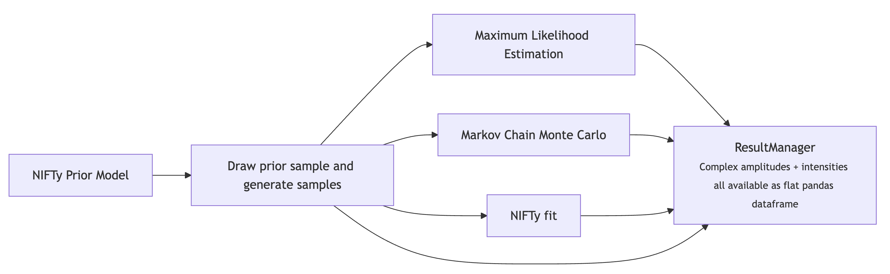

Analysis Workflow#
Motivation#
Partial wave analysis can be complicated (fitting, bookkeeping, result handling, …)
PyAmpTools sacrifices flexibility for ease of use and focuses on Python as the core language
Features:
Scientific Python ecosystem is massive (achieve most of the benefits of low level languages without the hassle)
Optimization uses gradients provided by JAX automatic differentiation (scales better than numerical diff.)
Hooks into several optimization frameworks spanning MLE, MCMC, to Variational Inference
iminuit, scipy, numpyro, iftpwa
YAML file is used to configure the analysis for consistency and automation
Fitting is generally done through the command line
Workflow Example#
The following analysis chain is an example of an input/output study. If you have data then you can skip you basically skip the first two steps.
We draw a sample from the nifty prior distribution
generate simulations (using
gen_amp+halld_sim/Piecewiseamplitude mimicking prior sample)bin the data
fit the simulated data using:
Maximum Likelihood Estimation (MLE)
Markov Chain Monte Carlo (MCMC)
Information Field Theory (IFT)
plot the results
We would like to show a high probability of reconstruction. If this occurs for a wide variety of samples (and we believe our data could be approximately described by the very-flexible nifty prior) then we have successfully demonstrated that inference would be robust.

import os
import subprocess
from pyamptools.utility.resultManager import ResultManager
from pyamptools.utility.resultManager import (
plot_binned_intensities,
plot_binned_complex_plane,
plot_overview_across_bins,
plot_moments_across_bins,
plot_gen_curves,
montage_and_gif_select_plots
)
from pdf2image import convert_from_path
def run_command(command):
"""Captures output so we do not have to dump everything to the terminal"""
result = subprocess.run(command, capture_output=True, shell=True, text=True)
return result.stdout, result.stderr
def show_pdf(pdf_path, dpi=150):
"""
Show a PDF in the notebook cell, rasterized since vscode jupyter cannot render PDFs
"""
img = convert_from_path(pdf_path, dpi=dpi)[0]
display(img)
PYAMPTOOLS_HOME = os.getenv("PYAMPTOOLS_HOME")
BASE_DIRECTORY = "RESULTS_TEST"
Welcome to JupyROOT 6.28/06
print("Doing some pre-run cleanup...")
os.system('rm -rf main.yaml local_beam.conf *.lock')
os.system(f'rm -rf {BASE_DIRECTORY}')
Doing some pre-run cleanup...
0
Default YAML file#
First we create a copy of the default YAML file which contains comments that explain each key/knob in the analysis
main_yaml = "main.yaml"
print("Generating default YAML file...")
stdout, stderr = run_command(f"pa from_default -o {main_yaml} -t twops -c") # -c for starting clean slate
# Update required fields the user is supposed to update manually for testing
cwd = os.getcwd()
update_required_fields = [
f"sed -i 's|_BASE_DIRECTORY_|{cwd}/{BASE_DIRECTORY}|g' {main_yaml}",
f"sed -i 's|_DATA_SOURCES_|DATA_SOURCES|g' {main_yaml}",
]
for cmd in update_required_fields:
os.system(cmd)
print("Updated required fields in YAML file...")
Generating default YAML file...
Updated required fields in YAML file...
Print contents of yaml file#
from rich.console import Console
from rich.syntax import Syntax
with open(main_yaml, 'r') as f:
yaml_content = f.read()
console = Console()
console.print(Syntax(yaml_content, "yaml", theme='default'))
defaults_location: null base_directory: /d/grid17/ln16/PyAmpTools/demos/RESULTS_TEST # base directory for all results data_folder: ${base_directory}/DATA_SOURCES # folder for data sources that will be binned n_processes: 4 # global number of processes to generally use polarizations: "000": 1.0 # polarization magnitude in each orientation waveset: Sp0+_Sp0-_Dp2+_Dp2- # underscore separated list of waves to use phase_reference: Sp0+_Sp0- # reference wave in each reflectivity sector reaction: Beam Proton Pi0 Eta # amptools reaction scheme daughters: # Daughter masses Pi0: 0.135 Eta: 0.548 min_mass: 1.04 # minimum mass to consider max_mass: 1.72 # maximum mass to consider n_mass_bins: 17 # number of mass bins to use min_t: 0.0 # minimum t to consider max_t: 1.0 # maximum t to consider n_t_bins: 1 # number of t bins to use acceptance_correct: true # whether to apply acceptance corrections datareader: ROOTDataReader # data reader to use coordinate_system: cartesian # ['cartesian', 'polar'], dont use polar bins_per_group: 1 # create group dirs grouping bins allowing nifty to handle finer bins merge_grouped_trees: true # remerge the trees in each group constrain_grouped_production: false # if not remerging, we can choose to constrain amplitudes in each group to be t real_waves: "" # same form as waveset, define which waves are purely real fixed_waves: "" # same form as waveset, define which waves are fixed add_amp_factor: "" # Add an amplitude factor to every amplitude. For example, OmegaDalitz 0.1212 0.0257 0.0 0.0 wil append_to_decay: "" # append this string to the decay amplitude, i.e. 'omega3pi' can be appended to Vec_ps_refl amp append_to_cfg: "" # append this string to the AmpTools configuration file coherent_sums: null # Dict[coherentSumName: UnderscoreSeparatedListOfWaves], i.e. D+: Dp0+_Dp2+ mle: seed: 42 # rng seed scale: 100 # production coenfficients sampled uniformly from [-scale, scale] n_random_intializations: 20 # number of random initializations to perform method: minuit-analytic # ['minuit-numeric', 'minuit-analytic', 'L-BFGS-B'] stdout: false # dump to stdout instead of log file bins: null # list of bin indices to process, null = all bins regularization: # Affects Likelihood manager directly (only use with MLE fits) apply_regularization: false # whether to apply regularization or not method: "none" # ['none', 'lasso', 'ridge', 'elasticnet'] lambdas: 0.0 # regularization strength for all partial waves en_alpha: 0.0 # (e)lastic (n)et -> 0=Lasso, 1=Ridge, 0<x<1 favors one side mcmc: seed: 42 # rng seed bins: null # process all bins if null, otherwise list of bin indices n_processes: ${n_processes} # number of processes to distribute work over prior_scale: 1000.0 # prior scale for the magnitude of the complex amplitudes, very wide prior_dist: gaussian # ['laplace', 'gaussian'] distribution for Real/Imag parts of amplitudes nchains: 6 # NUTS number of chains to use nwarmup: 500 # NUTS number of warmup samples to use when adapting nsamples: 1000 # NUTS number of samples to draw target_accept_prob: 0.80 # NUTS target acceptance probability max_tree_depth: 12 # NUTS step max depth to search step_size: 0.1 # NUTS step size adapt_step_size: true # NUTS step size adaptation dense_mass: false # NUTS dense mass matrix models correlations better adapt_mass_matrix: false # NUTS mass matrix adaptation moment_inversion: seed: 42 # rng seed n_processes: ${n_processes} # SVGD: number of processes bins: null # list of bin indices to process, null -> all bins source: mle # source of moments to invert from ResultManager, [mle, mcmc, ift, gen] amplitude_scale: 1.0 # real/imag part of amplitudes start N(0, amplitude_scale) num_particles: 500 # SVGD: number of particles num_iterations: 100 # SVGD: number of optimization steps to take tightness: 1000 # SVGD: scale factor for loss function loss_exponent: 2 # SVGD: loss exponent, 1=L1, 2=L2 loss function decay_iterations: null # SVGD: steps to decay kernel by 1/e, null -> num_iterations//5 initial_scale: 1.0 # SVGD: initial kernel bandwidth scale min_scale: 0.0 # SVGD: minimum kernel bandwidth scale step_size: 0.01 # SVGD: step size for Adam optimizer nifty: yaml: ${NIFTY} # Dictionary for config file used by iftpwa force_load_normint: false # force loading normalization integrals (used for prior simulation) mpi_processes: ${n_processes} # number of mpi processes to use NIFTY: GENERAL: pwa_manager: GLUEX seed: 5 # Seed for iftpwa RNG verbosityLevel: 1 outputFolder: ${base_directory}/NIFTY # Expected location for nifty results fitResultPath: ${NIFTY.GENERAL.outputFolder}/niftypwa_fit.pkl # iftpwa fit results pkl file maxNIFTyJobs: 1 # Lock to 1, change nifty.mpi_processes to distribute work initial_position_std: 0.1 # Prior model std, see NIFTY/optimize_kl.py for more details (is the default) default_yaml: null PWA_MANAGER: yaml: ${NIFTY.GENERAL.outputFolder}/main.yaml # main yaml file, this file IFT_MODEL: scale: auto # overall scale factor for amplitude nCalcScale: 500 # number of samples used to estimate IFT_MODEL.scale positiveScale: half_normal # distribution for scale factor (half_normal, sqrt_exp) useLogNormalPriorSlope: false # use log normal prior for the slope of the power spectra instead of normal useGammaFlex: false # use Gamma distribution for the flexibility of the power spectra useLaplaceScale: false # should be same as setting positiveScale = sqrt_exp useGammaAsp: false # use Gamma distribution for the asperity of the power spectra loglogavgslope: [-4.0, 0.1] # [mean, std] of the power spectrum slope (log-log scale) for mass axis flexibility: null # [mean, std] of the flexibility of the power spectra for mass axis asperity: null # [mean, std] of the asperity of the power spectra for mass axis stdOffset: [1.0, 0.001] # [mean, std] of the STD of the amplitude offset dofdexStye: real_imag # (real_imag, single_dofdex) allows fields to share the same power spectrum model custom_model_path: null # (YAML reference) defined below, i.e. ${PARAMETRIC_MODEL}. Set null if you do not want modelName: constructed res2bkg: 1.0 # globally scale ALL parametric/resonance contributions before adding to bkgnd to form the signal bkg2res: 1.0 # globally scale ALL bkgnd contributions before adding to parametric/resonance to form the signal tPrimeFalloff: 0 # preweight t distribution. Legacy estimateRatios: false # use the user-provided dataset ratios. Unused by GlueX perTprimeScaling: true # scale each t bin separately altTprimeNorm: no_norm # (peak_norm, no_norm, kin_norm) normalize scheme of phase space multiplier for each t-b noInterpScipy: false # use scipy.interpolate.interp1d cubic interpolation instead of nifty.interp linear interp phaseSpaceMultiplier: ${base_directory}/phasespace.pkl # Path to a pickled file containing phase space factors, s0: null # energy scale factor productionFactor: GLUEX # Production factor scheme, depends on beam energy and target mass ####### BELOW ARE ONLY USED IF USING MULTIPLE DATASETS ####### ratio_fluct: null ratio_fluc_std: null ratio_slope: null ratio_stdSlope: null ratio_slopeTprime: null ratio_stdSlopeTprime: null ratio_std_offset: null ratio_std_std_offset: null PARAMETRIC_MODEL: # to use, set NIFTY.IFT_MODEL.custom_model_path: ${NIFTY.PARAMETRIC_MODEL} smoothScales: false # uses a correlated field to smooth the t-dependence of the parameteric models parameter_priors: # Define prior distributions for the free parameters # see iftpwa/src/utilities/nifty.py for available priors but most parameters should be positive so log-normal m_a2_1320: UnnamedLogNormalOperator(sigma=0.0006, mean=1.3182) w_a2_1320: UnnamedLogNormalOperator(sigma=0.0055, mean=0.1111) # (name) of resonance, (fun)ction name, (preScale) this component, request no correlated field (no_bkg) # (paras) parameter priors, (static_paras) static parameters needed by (fun) # and (waves) this component couples to resonances: [ { a2_1320: { name: $a_2(1320)$, fun: breitwigner_dyn, preScale: 1.0, no_bkg: false, paras: { mass: m_a2_1320, width: w_a2_1320 }, static_paras: { spin: 2, mass1: 0.548, mass2: 0.135 }, waves: [Dm1-, Dp0-, Dp1-, Dp0+, Dp1+, Dp2+], }, }, ] OPTIMIZATION: # Posterior samples. We actually get 2x nSamples in the end due to 'antithetic' sampling nSamples: [[2, 0], [2, 5], 10] # [[nI1, nS1], ...] -> run nI1 iterations with nS1 samples then nI2 with nS2, .. nIterGlobal: 5 # number of global iterations to run NIFTy optimize_kl. ~25-50 is pretty deep already nMultiStart: 0 # number of multiple restarts to perform (each only a fixed single global iteration) that optimi multiStartObjective: minimize|energy # pipe separated direction|quantity to select best starting condition algoOptKL: LBFGS # algorithm for KL minimization nIterMaxOptKL: [[1, 50], 50] # [[nI1, nMax1], ...] -> run nI1 iterations with nMax1 KL steps, then nI2 with nMa deltaEKL: 0.001 # increase convergence counter if change in KL energy is below this value convergenceLvlKL: 2 # convergence counter must reach this value to be considered converged nIterMaxSamples: 1000 # iteration limit for sampling deltaESampling: 0.1 # convergence threshold for sampling convergenceLvlSampling: 2 # convergence counter threshold for sampling algoOptGeoVI: Newton # algorithm for GeoVI nIterMaxGeoVI: 50 # iteration limit for GeoVI deltaEGeoVI: 0.001 # convergence threshold for GeoVI convergenceLvlGeoVI: 2 # convergence counter threshold for GeoVI resume: true # resume previous fit or overwrite niftyCache: ${NIFTY.GENERAL.outputFolder} # results dumped here $niftyCache/niftypwa_fit.pkl overwriteCache: true # overwrite cache if it exists sanityChecks: false # run sanity checks on the fit constants: [tamps_mass_dir_loglogavgslope] # names of latent space variables that should be fixed LIKELIHOOD: # ADVANCED (Can ignore) approximation: false # approximate the likelihood with Gaussian metric_type: normal # type of metric to use for the likelihood (normal, studentt) learn_metric: false # can learn metric but not recommended learn_metric_sigma: 1.0 subSampleProb: 1.0 # subsample the data to speed up likelihood calculation initialSubSampleProb: 1.0 # scale the initial signal field by this factor subSampleApproxIndep: false # legacy, unused nKeepMetric: 1 # global iterations at nKeepMetric intervals will not approximate the likelihood theta_studentt: null # theta parameter for student-t distribution bootstrap: false # bootstrap the data to introduce more stochasticity external_approximation: null # path to an external pickle file, null if not used dropout_prob: 0.0 # dropout probability for each kinematic bin, adds stochasticity rotate_phase: null # null or bool clip_latent: 0 # float [0, 1] fractional scaling of latent space between (-clip_latent, clip_latent) prevent la HYPERPARAMETER_SCANS: # Run scans by passing --hyperopt to `pa run_ift` # Scans are performed by [Optuna](https://github.com/optuna/optuna). # - iftpwa naturally tracks the KL energy and the intensity of all individual amplitude components. # - if a ground truth is provided, the mean squared error or chi-squared (if number of samples > 1) are also # Above metrics are all available to be optimized against. # These metrics take the form `{amplitude_field_name}_{"fit", resonance_name, "bkg"}_{"intens", "chi2"}`. # - A list of tracked metrics can be dumped at the end of a iftpwa fit if `verbosityLevel` > 0 if you are uns # Aggregated stats for `chi2` metric is also calculated: `{min, -2sigma, -1sigma, median, 1sigma, 2sigma, max}` # Fields within this yaml can be referenced following a field path that is period delimited. # An Optuna `suggest` command and associated args must also be passed. Field values must be a # string that is then `eval`'d by `python` to construct `args` and `kwargs`. # - For example, OPTIMIZATION.nSamples.1|suggest_int: "2, 10, step=2"` would modify the # `nSamples` sub-field within the `OPTIMIZATION` field of `NIFTY` field so that Optuna makes integer # suggestions on list index element 1. The suggestions are integers between 2 and 10 in steps of 2. # - See Optuna docs for available `suggest` commands. n_trials: 10 # number of trials for the hyperparamter scan objective: minimize|energy # direction|objective see multiStartObjective sampler: RandomSampler # see https://optuna.readthedocs.io/en/stable/reference/samplers/index.html amptools: # DEPRECATED, no longer using for MLE output_directory: ${base_directory}/BINNED_DATA # Expected location for amptools results search_format: group n_randomizations: ${n_processes} bins_per_group: ${bins_per_group} merge_grouped_trees: ${merge_grouped_trees} mle_query_1: status == 0 & ematrix == 3 mle_query_2: delta_nll==0 constrain_grouped_production: ${constrain_grouped_production} regex_merge: --regex_merge '.*::.*::' n_processes: ${n_processes} skip_plotting_mle: true pyamptools_commit_hash: 277f26c3f7f36bdec5f00fe67729fd2dd4f5aac1 iftpwa_commit_hash: f7f89b6cef3ca49316d8c3e6bcd48a6f6f1754b9
Processing the event sample#
Have Data?#
If you already have a data sample: You obviously will not need to draw a sample from the prior. You will need to update the YAML file to properly use your data sample. Most of the keys you need to modify are top level keys. These keys specify your dataset, reaction, and kinematic binning. Once that is done, you can run the following commands and you will be ready to perform fits. Depending on your dataset size and model, the default settings for the optimization schemes may not be appropriate.
# Update <main_yaml> to use your data sample, reaction, kinematic binning, etc.
# In your shell, run the following commands
pa run_cfgGen <main_yaml>
pa run_divideData <main_yaml>
pa run_processEvents <main_yaml>
Drawing Simulations#
Draw a sample from the iftpwa prior model then simulate data from the model and phase space MC. Then divide the data into kinematic bins.
seed = 42 # rng seed for reproducibility
t_slope = 3.0 # slope of the momentum transfer (exponentially distributed)
min_ebeam = 8.2 # minimum energy of the photon beam
max_ebeam = 8.8 # maximum energy of the photon beam
n_data = 10000 # number of data samples to generate
n_ps = 50000 # number of phase space samples to generate
# -c for starting clean
print("Running prior simulation...")
stdout, stderr = run_command(f"pa run_priorSim {main_yaml} -s {seed} -emin {min_ebeam} -emax {max_ebeam} -t {t_slope} -nd {n_data} -np {n_ps} -c")
Running prior simulation...
print("Prior simulation complete, drawing results...")
resultManager = ResultManager(main_yaml, silence=True)
resultManager.attempt_load_all()
plot_gen_curves(resultManager, file_type='pdf')
show_pdf(f"{BASE_DIRECTORY}/PLOTS/gen_curves.pdf")
del resultManager
Prior simulation complete, drawing results...
/d/grid17/ln16/miniconda/envs/pyamptools/lib/python3.9/site-packages/nifty8/library/correlated_fields.py:460: UserWarning: unable to add JAX operator for total_N=8
warn(f"unable to add JAX operator for total_N={total_N}")
Run the MLE fits using iminuit#
We begin by running a set of maximum likelihood fits on the generated data and compare the results to the generated amplitudes. The specifications for this optimization are specified in the YAML file under the mle key.
The ResultManager class, when initialized with the path to the YAML file, will automatically attempt to load all results into memory. Each result (from MLE, MCMC, IFT) is stored a separate directory for unique access. All results (complex amplitude values, intensities, and metadata like mass, likelihood, etc.) are pulled into a flat pandas dataframe for efficient plotting and analysis.
The main “money” plot (intensity and relative phases of all partial waves) can be generated with the default plotting function, plot_overview_across_bins. The MLE results a slightly jittered to avoid too much overlap. The dashed lines are the generated amplitudes
print("Running MLE fits...")
stdout, stderr = run_command(f"pa run_mle {main_yaml}")
Running MLE fits...
print("MLE fits complete, plotting results...")
resultManager = ResultManager(main_yaml, silence=True) # Silence all the helpful output for clean documentation
resultManager.attempt_load_all()
plot_overview_across_bins(resultManager, file_type='pdf')
montage_and_gif_select_plots(resultManager, file_type='pdf')
show_pdf(f"{BASE_DIRECTORY}/PLOTS/intensity_and_phases/montage_output.pdf")
del resultManager
MLE fits complete, plotting results...
=================================================================
=================================================================
/d/grid17/ln16/miniconda/envs/pyamptools/lib/python3.9/site-packages/nifty8/library/correlated_fields.py:460: UserWarning: unable to add JAX operator for total_N=8
warn(f"unable to add JAX operator for total_N={total_N}")
montage: unable to read font `' @ error/annotate.c/RenderFreetype/1658.
Run MCMC fits using NUTS algorithm#
MCMC is a set of techniques that draws samples from the posterior distribution. This framework uses Hamiltonian Monte Carlo (HMC) implemented in the No U-Turn Sampler (NUTS) algorithm. For this study, we choose 8 independent chains (each starting off in a different region of parameter space, traverses and draws samples from the posterior). n_warmup designates the number of samples to discard as the chains move toward a posterior mode and is used to adapt internal NUTS parameters. n_samples is the number of samples to draw for each chain. n_chains is drawn for each mass bin independently and the work is pooled across all n_processes processes
The newly created MCMC results is automatically loaded by the ResultManager class and the same plotting calls are made
# We can also explicitly overwrite the options in the YAML file using these command line args
n_processes = 17
n_chains = 8
n_warmup = 500
n_samples = 100
print("Running MCMC fits...")
stdout, stderr = run_command(f"pa run_mcmc {main_yaml} -np {n_processes} -nc {n_chains} -nw {n_warmup} -ns {n_samples}")
Running MCMC fits...
print("MCMC fits complete, plotting results...")
resultManager = ResultManager(main_yaml, silence=True)
resultManager.attempt_load_all()
plot_overview_across_bins(resultManager, file_type='pdf')
montage_and_gif_select_plots(resultManager, file_type='pdf')
show_pdf(f"{BASE_DIRECTORY}/PLOTS/intensity_and_phases/montage_output.pdf")
del resultManager
MCMC fits complete, plotting results...
=================================================================
=================================================================
/d/grid17/ln16/miniconda/envs/pyamptools/lib/python3.9/site-packages/nifty8/library/correlated_fields.py:460: UserWarning: unable to add JAX operator for total_N=8
warn(f"unable to add JAX operator for total_N={total_N}")
montage: unable to read font `' @ error/annotate.c/RenderFreetype/1658.
Run iftpwa fit#
Finally we run a IFT analysis with the same prior model used to generate the synthetic data to obtain a posterior estimate. These are shown in the solid lines. The settings for the IFT model are specified in the YAML file under the nifty key.
print("Running IFT fit...")
stdout, stderr = run_command(f"pa run_ift {main_yaml}")
Running IFT fit...
print("IFT fit complete, plotting results...")
resultManager = ResultManager(main_yaml, silence=True)
resultManager.attempt_load_all()
plot_overview_across_bins(resultManager, file_type='pdf')
montage_and_gif_select_plots(resultManager, file_type='pdf')
show_pdf(f"{BASE_DIRECTORY}/PLOTS/intensity_and_phases/montage_output.pdf")
del resultManager
IFT fit complete, plotting results...
=================================================================
=================================================================
/d/grid17/ln16/miniconda/envs/pyamptools/lib/python3.9/site-packages/nifty8/library/correlated_fields.py:460: UserWarning: unable to add JAX operator for total_N=8
warn(f"unable to add JAX operator for total_N={total_N}")
/d/grid17/ln16/miniconda/envs/pyamptools/lib/python3.9/site-packages/nifty8/library/correlated_fields.py:460: UserWarning: unable to add JAX operator for total_N=8
warn(f"unable to add JAX operator for total_N={total_N}")
montage: unable to read font `' @ error/annotate.c/RenderFreetype/1658.
Additional Plots#
This sections contains a few additional default plots that highlight different aspects of the analysis:
Plot projected moments
Plot inferred amplitudes in the complex plane
Plot intensity distributions
We first need to create the plots which also requires projecting the amplitudes onto the moment basis.
print("Plotting additional results...")
resultManager = ResultManager(main_yaml, silence=True)
resultManager.attempt_load_all()
resultManager.attempt_project_moments(normalization_scheme=0, pool_size=4, batch_size=200)
plot_binned_complex_plane(resultManager, file_type='pdf', silence=True)
plot_binned_intensities(resultManager, file_type='pdf', silence=True)
plot_moments_across_bins(resultManager, file_type='pdf')
montage_and_gif_select_plots(resultManager, file_type='pdf')
del resultManager
Plotting additional results...
=================================================================
=================================================================
/d/grid17/ln16/miniconda/envs/pyamptools/lib/python3.9/site-packages/nifty8/library/correlated_fields.py:460: UserWarning: unable to add JAX operator for total_N=8
warn(f"unable to add JAX operator for total_N={total_N}")
/d/grid17/ln16/miniconda/envs/pyamptools/lib/python3.9/site-packages/nifty8/library/correlated_fields.py:460: UserWarning: unable to add JAX operator for total_N=8
warn(f"unable to add JAX operator for total_N={total_N}")
MomentManagerTwoPS| Calculating moments assuming a TwoPseudoscalar system with max J = 4
MomentManagerTwoPS| Calculating moments assuming a TwoPseudoscalar system with max J = 4
MomentManagerTwoPS| Calculating moments assuming a TwoPseudoscalar system with max J = 4
MomentManagerTwoPS| Calculating moments assuming a TwoPseudoscalar system with max J = 4
montage: unable to read font `' @ error/annotate.c/RenderFreetype/1658.
WARNING: The convert command is deprecated in IMv7, use "magick" instead of "convert" or "magick convert"
montage: unable to read font `' @ error/annotate.c/RenderFreetype/1658.
WARNING: The convert command is deprecated in IMv7, use "magick" instead of "convert" or "magick convert"
montage: unable to read font `' @ error/annotate.c/RenderFreetype/1658.
montage: unable to read font `' @ error/annotate.c/RenderFreetype/1658.
Plot projected moments#
We can project the inferred amplitudes into moments to understand whether the scatter in the amplitude basis collapses onto a tighter space in the moment basis. This allows one to answer questions related to ambiguities and stability of the inference in the amplitude basis.
Here, we only plot the non-zero moments (given the set of inferred partial waves). The moments are normalized to the zeroth moment. The MLE point estimates are only shown (errors not propagated)
show_pdf(f"{BASE_DIRECTORY}/PLOTS/moments/montage_output.pdf")
Plots of the complex plane:#
The inferred amplitudes live in the complex plane. We can scatter the inferred amplitudes and compare the results from the different techniques to see how they compare. A comparison is only shown for one bin. The reference waves are shown as histograms since they have no imaginary component. The color of the scattered points in the non-reference waves is mapped to the intensity of the corresponding reference wave. In this example, the MLE and MCMC results agree and that the MLE errors track the MCMC samples. The band of MCMC solutions is from the smaller reference wave intensity not locking in a well defined phase
show_pdf(f"{BASE_DIRECTORY}/PLOTS/complex_plane/bin3_complex_plane.pdf")
Plots of the intensity distributions:#
The overview plot (intensity and relative phases as a function of mass) gives a qualitative description of the results. This plot shows the intensity distribution of the results from the various techniques in a single bin. The \(D_2^-\) wave in this bin is small. The estimated MLE uncertainties are bad in this case and covers negative values. The MCMC results shows a highly skewed distribution.
show_pdf(f"{BASE_DIRECTORY}/PLOTS/intensity/bin1_intensities.pdf")
Cleanup#
print("Cleaning up...")
os.system('rm -rf main.yaml local_beam.conf *.lock')
os.system(f'rm -r {BASE_DIRECTORY}')
Cleaning up...
0